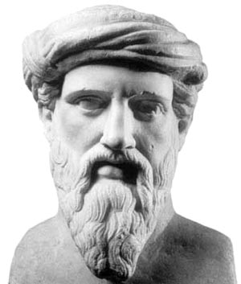
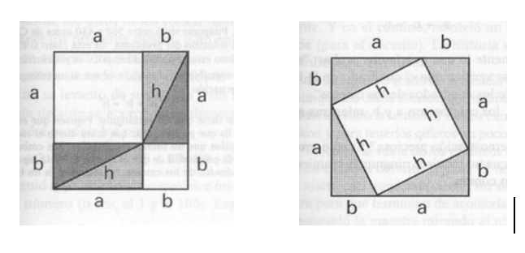

Pitágoras de Samos es considerado un profeta y místico, nacido en Samos, una de las islas Dodecanesas, no muy lejos de Mileto, el lugar en donde nació Tales. Algunos pintan a Pitágoras como alumno de Tales, pero eso no parece muy probable debido la diferencia de casi medio siglo entre ambos. Lo que sí es muy probable es que Pitágoras haya ido a Babilonia y a Egipto, e incluso a la India, para tener información de primera mano sobre matemática y astronomía, y eventualmente, también sobre religión.
Pitágoras fue, casualmente, contemporáneo de Buda, de Confucio y de Lao-Tsé, de manera que el siglo estaba en plena ebullición tanto desde el punto de vista de la religión, así como de la matemática.
Cuando retornó a Grecia, se estableció en Crotón, en la costa sudeste de lo que ahora es Italia, pero en ese momento se conocía como "La Magna Grecia". Ahí estableció una sociedad secreta que hacía recordar un culto órfico salvo por su base matemática y filosófica.
Que Pitágoras permanezca como una figura oscura se debe en parte a la pérdida de todos los documentos de esa época. Algunas biografías de Pitágoras fueron escritas en la antigüedad, inclusive por Aristóteles, pero no sobrevivieron. Otra dificultad en identificar claramente la figura de Pitágoras obedece al hecho de que la orden que él estableció era comunal y secreta. El conocimiento y la propiedad eran comunes, de manera tal que la atribución de los descubrimientos no se le hacía a alguien en particular, sino que era considerado patrimonio del grupo. Es por eso que es mejor no hablar del trabajo de Pitágoras, sino de las contribuciones de "los pitagóricos".

Teorema de Pitágoras
"En todo triángulo rectángulo, el cuadrado de la hipotenusa, es igual a la suma de los cuadrados de los catetos"
Demostración
Existen muchas formas de demostrar el teorema de Pitágoras. Aquí va una:
Se tiene un triángulo rectángulo T, de lados a, b y h. (Se llama triángulo rectángulo a un triángulo en el que uno de los án gulos es de 90 grados, también llamado ángulo recto.)
Imaginemos que el triángulo T está hecho "pegando" tres hilos. Supongamos que se le puede "cortar" el lado h, y que uno puede "estirar" los lados a y b.
Con este nuevo "lado", de longitud (a+b), fabricamos dos cuadrados iguales. Cada lado del cuadrado mide (a+b). Marcamos en cada cuadrado los lados a y b, de manera tal de poder dibujar estas figuras:

Ahora, observemos en cada cuadrado cuántas veces aparece el triángulo T (para lo cual hay que marcar en un dibujo los cuatro triángulos T en cada cuadrado). Como los cuadrados son iguales, una vez que hemos descubierto los cuatro triángulos en cada uno de ellos, la superficie que queda "libre" en cada uno tiene que ser la misma.
Ahora, observemos en cada cuadrado cuántas veces aparece el triángulo T (para lo cual hay que marcar en un dibujo los cuatro triángulos T en cada cuadrado). Como los cuadrados son iguales, una vez que hemos descubierto los cuatro triángulos en cada uno de ellos, la superficie que queda "libre" en cada uno tiene que ser la misma.
En el primer cuadrado, quedan dos "cuadraditos" de superficies a y b respectivamente. Por otro lado, en el otro cuadrado queda dibujado un "nuevo" cuadrado de área h². Conclusión: "tiene" que ser
a² + b² = h²
que es justamente lo que queríamos probar: "en todo trián gulo rectángulo se verifica que el cuadrado de la hipotenusa es igual a la suma de los cuadrados de los catetos" En este caso, los catetos son a y b, mientras que la hipotenusa es h. ¿No es una demostración preciosa? Es sólo producto de una idea maravillosa que no requiere ninguna herramienta complicada. Sólo sentido común.